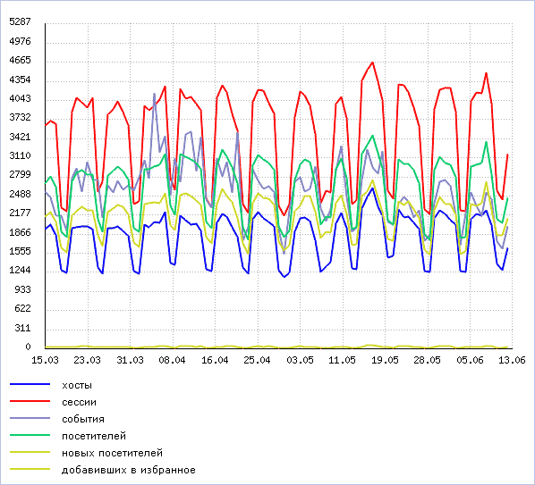

Эта форма показывает статистическую информацию по посещаемости сайта, включая хиты, хосты, сессии и события. Информация отображается в графической и табличной формах.
С помощью фильтра можно отобразить данные за интересующий период времени. После установки фильтра (по нажатию кнопки Построить) выбранная информация отображается на графике и находит отражение в таблице. Нажатие кнопки Отменить очищает график.
| Наименование параметра | Описание |
|---|---|
| Период | Эти поля фильтра позволяют выбрать период времени, за который следует отобразить статистику. Для задания временного диапазона можно использовать либо список с количеством дней, либо поля-календари. |
| Сайт | Выбор сайта, информацию по которому следует отобразить. |
| Что показать на графиках | Набор опций, позволяющий выбрать, какой тип данных следует отображать на графике. Нажатие кнопки фильтра Отменить равносильно сбросу всех опций, т.е. очищает график. |
| Показать все условия | Отражает все поля фильтра. |
| Скрыть все условия | Скрывает все поля фильтра, кроме полей по умолчанию. |
| Кнопка | Описание |
|---|---|
| Сгруппировано по... | Нажатие этой кнопки открывает контекстное меню, в котором можно выбрать тип и плотность группировки отображаемой информации: по датам, по часам, по дням недели или по месяцам. |
| Настроить | Позволяет перейти к диалогу настройки внешнего вида отчетной формы. |
| Excel | Экспортирует данные из отображаемой таблицы (не график) в формат MS Excel. |
График отображает данные, выбранные для его построения в фильтре.

| ID | Дата | День недели | Хитов | Хостов | Сессий | Событий | Посетителей | Новых | Избр. |
|---|---|---|---|---|---|---|---|---|---|
| [1] | [2] | [3] | [4] | [5] | [6] | [7] | [8] | [9] | [10] |
| Выбрано: [11] | |||||||||
| © «Битрикс», 2001-2008, «1C-Битрикс», 2008 | 1С-Битрикс: Управление сайтом |